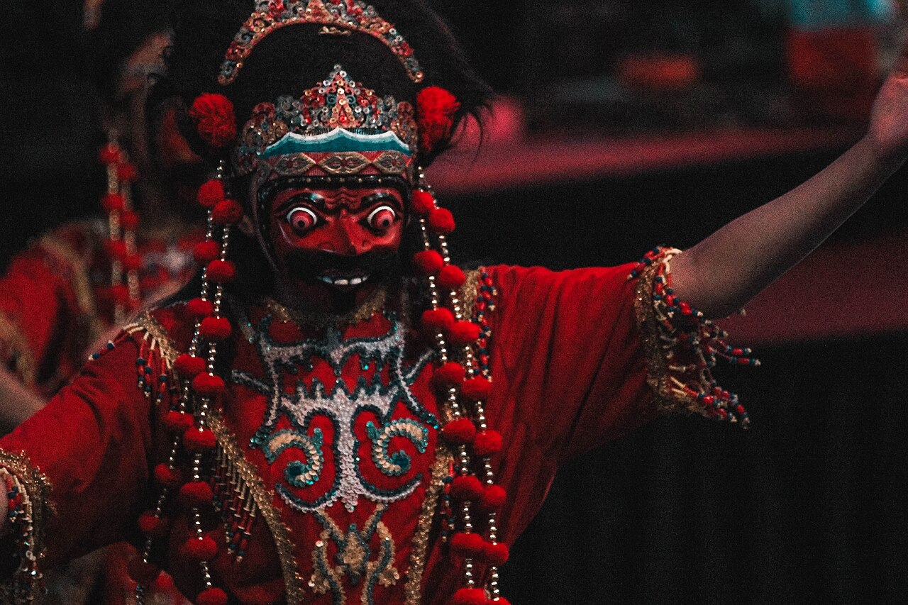

Sendratari
Tari Cepetan Alas
Sendratari topeng dari Karanggayam yang mengisahkan pembukaan hutan tahun 1943 dan perlawanan terhadap penjajah Jepang. Uniknya melibatkan aksi "kesurupan" ekstrim seperti memakan bunga dan membalik tubuh.